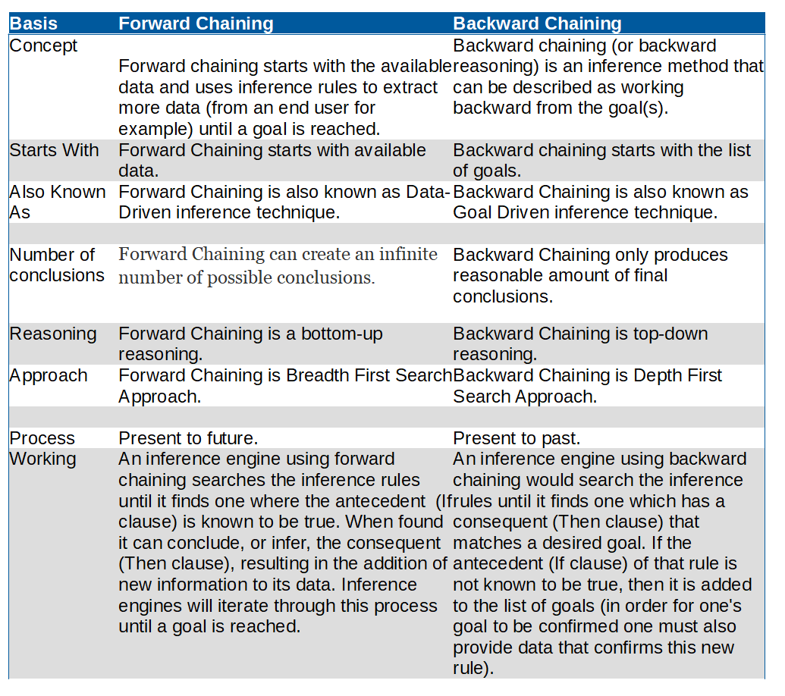

What is the main difference between forward chaining and backward chaining?
The main difference between forward chaining and backward chaining is Forward chaining starts with the available data and uses inference rules to extract more data (from an end user for example) until a goal is reached whereas Backward chaining (or backward reasoning) is an inference method that can be described as working backward from the goal(s). Forward Chaining starts with available data. Backward chaining starts with the list of goals.
| Basis | Forward Chaining | Backward Chaining |
| Concept | Forward chaining starts with the available data and uses inference rules to extract more data (from an end user for example) until a goal is reached. | Backward chaining (or backward reasoning) is an inference method that can be described as working backward from the goal(s). |
| Starts With | Forward Chaining starts with available data. | Backward chaining starts with the list of goals. |
| Also Known As | Forward Chaining is also known as Data-Driven inference technique. | Backward Chaining is also known as Goal Driven inference technique. |
| Number of conclusions | Forward Chaining can create an infinite number of possible conclusions. | Backward Chaining only produces reasonable amount of final conclusions. |
| Reasoning | Forward Chaining is a bottom-up reasoning. | Backward Chaining is top-down reasoning. |
| Approach | Forward Chaining is Breadth First Search Approach. | Backward Chaining is Depth First Search Approach. |
| Process | Present to future. | Present to past. |
| Working | An inference engine using forward chaining searches the inference rules until it finds one where the antecedent (If clause) is known to be true. When found it can conclude, or infer, the consequent (Then clause), resulting in the addition of new information to its data. Inference engines will iterate through this process until a goal is reached. | An inference engine using backward chaining would search the inference rules until it finds one which has a consequent (Then clause) that matches a desired goal. If the antecedent (If clause) of that rule is not known to be true, then it is added to the list of goals (in order for one's goal to be confirmed one must also provide data that confirms this new rule). |
Forward Chaining
Forward chaining starts with the available data and uses inference rules to extract more data (from an end user for example) until a goal is reached. An inference engine using forward chaining searches the inference rules until it finds one where the antecedent 5 (If clause) is known to be true. When found it can conclude, or infer, the consequent (Then clause), resulting in the addition of new information to its data. Inference engines will iterate through this process until a goal is reached.
Backward Chaining
Backward chaining (or backward reasoning) is an inference method that can be described as working backward from the goal(s). It is used in automated theorem provers, proof assistants and other artificial intelligence applications, but it has also been observed in primates. In game theory, its application to (simpler) sub-games in order to find a solution to the game is called backward induction. In chess, it is called retrograde analysis, and it is used to generate table bases for chess endgames for computer chess. Backward chaining is implemented in logic programming by SLD resolution. Both rules are based on the modus ponens inference rule. It is one of the two most commonly used methods of reasoning with inference rules and logical implications – the other is forward chaining. Backward chaining systems usually employ a depth-first search strategy, e.g. Prolog.